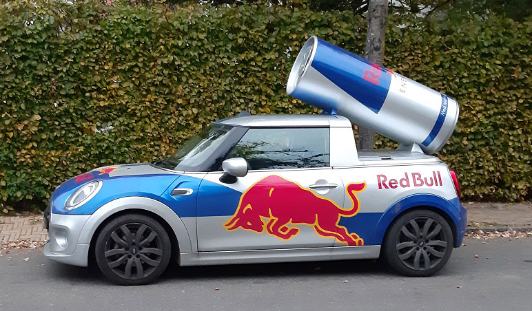

Kemi A
Ny ordning
kl. 09.00-14.00
Vejledning
Prøven
Opgavesættet består af 4 opgaver med i alt 15 delopgaver.Alle hjælpemidler er tilladt.
Følgende hjælpemidler forudsættes:
DATABOG fysik kemi (F&K Forlaget), 11. udgave (2007) eller senere udgave.
Opgavebesvarelsen
Din opgavebesvarelse skal afleveres i et samlet dokument, gemt i pdf-format.
Bedømmelse
Ved den skriftlige prøve lægges der vægt på din evne til at:
| - | anvende fagets viden og metoder til behandling af kemiske problemstillinger | |
| - | gøre iagttagelser og analysere eksperimentelt arbejde, samt efterbehandle og vurdere resultater herfra | |
| - | gennemføre og præsentere relevante beregninger med korrekt brug af fagsprog | |
| - | benytte relevante matematiske modeller, metoder og repræsentationsformer | |
| - | benytte fagspecifikke digitale værktøjer hensigtsmæssigt | |
| - | dokumentere anvendte informationer fra forskellige kilder | |
| - | udtrykke dig skriftligt, således at tankegangen fremstår struktureret og tydelig. |
Opgave 1: Taurin - en populær ingrediens i energidrikke
|  |
Taurin er en populær ingrediens i energidrikke, fx i Red Bull. Stoffet menes dog ikke at have nogen præstationsfremmende effekt. Taurin findes i kropsvæv, hvor det udgør op mod 0,1 % af kropsvægten.
Stoffet blev første gang opdaget i galden på en okse, og fik derfor navnet taurin, der kommer fra latinsk taurus (tyr). |
Strukturen af taurin er vist nedenfor.
M = 125,15 g/mol
Figur 1.1
I en dåse Red Bull er der 250 mL energidrik, som indeholder 1,0 g taurin.
| a) | Beregn den formelle stofmængdekoncentration af taurin i energidrikken. |
Taurin har syre-baseegenskaber, og kan i vandig opløsning findes på formerne vist i figur 1.2.

| form 1 | form 2 | form 3 |
Figur 1.2
Bjerrumdiagrammet for taurin er vist i figur 1.3.
Figur 1.3
Tandlægeforeningen har undersøgt pH-værdien i en række energidrikke. Af de undersøgte energidrikke blev den laveste pH-værdi målt i energidrikken Burn. Heri var pH 2,8.
| b) | Bestem den procentvise fordeling mellem de tre former af taurin, vist i figur 1.2, ved energidrikken Burns pH. Inddrag figur 1.3. |
Syntesen af taurin starter med en oxidation af cystein til cysteinsulfinsyre, som er vist i figur 1.4. Reaktionen er katalyseret af enzymet cysteindioxygenase.
Figur 1.4
Den enzymatiske omdannelse af cystein undersøges af en elev.
Der fremstilles en række reaktionsblandinger med forskellige koncentrationer af cystein. Alle reaktionsblandinger indeholder enzymet cysteindioxygenase i samme koncentration.
Initialhastigheden v for omdannelse af cystein bestemmes for de forskellige cysteinkoncentrationer i reaktionsblandingen. Resultaterne er vist i figur 1.5.
Figur 1.5
Excelfil kinetikdata for cystein
| c) | Vis, at omdannelsen af cystein er af første orden for koncentrationer af cystein under 10 μm.
Angiv hastighedskonstanten for omdannelsen for koncentrationer af cystein under 10 μm. |
Opgave 2: Henna
|
|
En hennatattovering er en ikke-permanent farvning af huden. Det har traditionelt været brugt i mellemøsten, som kropsudsmykning for unge kvinder.
Hennafarven kommer fra hennatræets blade, der knuses til et pulver, som røres op i vand og påføres huden i smukke mønstre. Henna anvendes også til hårfarvning. |
M = 174,155 g/mol
Figur 2.1
Hennapulver indeholder mange stoffer, fx stofferne vist i figur 2.2.
| lawson | A | B |
Figur 2.2
MarvinSketchfil Figur 2.2 ChemSketchfil Figur 2.2
Stofferne lawson, A og B i figur 2.2 er fordelt i tre glas, 1, 2 og 3, med et stof i hvert glas. Der gennemføres kemiske tests på stofferne, som vist i filmen nedenfor.
Kemiske tests på stofferne i figur 2.2.
| a) | Argumenter for, hvordan reagensglassene kan tilordnes de tre stoffer på baggrund af de kemiske tests. |
Indholdet af lawson i hennapulver kan bestemmes ved en spektrofotometrisk analyse, som vist i filmen nedenfor.
Spektrofotometrisk analyse af lawson
Resultaterne er vist i datafilen nedenfor
Excelfil spektrofotometriske data for lawson
| b) | Gør rede for, at absorbansen følger Lambert-Beers lov for lawson i standardopløsningerne.
|
|
| c) | Bestem indholdet af lawson i hennapulveret. Angiv resultatet i mg pr. g hennapulver. |
Opgave 3: Chloroquin - et aktuelt malariamiddel
Chloroquin er et lægemiddel, der er blevet brugt til behandling af malaria i mere end 70 år.
Stoffet er nemt og billigt at fremstille, og har derfor vundet udbredt anvendelse i verdens malariaområder.
I forbindelse med COVID-19 pandemien er chloroquin blevet undersøgt som muligt lægemiddel til behandling af COVID-19-patienter. En del undersøgelser er dog blevet stoppet, da foreløbige resultater ikke var positive.
I figur 3.1 ses strukturformlen for chloroquin.
Figur 3.1
MarvinSketchfil Figur 3.1 chloroquin ChemSketchfil Figur 3.1 chloroquin
Lægemidlet forhandles som en racemisk blanding af stereoisomerer, der begge virker mod malaria.
| a) | Gør rede for, at chloroquin udviser stereoisomeri. |
I figur 3.2 ses et udsnit af et reaktionsforløb til fremstilling af chloroquin.
Figur 3.2
Reaktion 2 er vist i tegnefiler nedenfor.
MarvinSketchfil Figur 3.2 reaktion 2 ChemSketchfil Figur 3.2 reaktion 2
| b) | Færdiggør reaktionsskemaet for reaktion 2.
Angiv reaktionstype for reaktionen. Begrund ud fra reaktionsskemaet. |
|
| c) | Argumenter for, hvordan A, D og E i figur 3.2 kan skelnes fra hinanden ud fra deres IR-spektre. Inddrag kun absorptionsbånd over 1500 cm-1. |
I nogle af verdens malariaområder har malariaparasitter udviklet resistens overfor chloroquin. Derfor har forskere udviklet andre malariamidler, hvor delelementer af chloroquins struktur er ændret. I figur 3.3 ses strukturen af et sådant malariamiddel F.
Figur 3.3
X indeholder en tertiær aminogruppe, men ellers kun C- og H-atomer.
I figur 3.4 ses 1H-NMR-spektret for malariamidlet F. Spektrometerfrekvensen er 900 MHz.
Figur 3.4
I figur 3.5 ses en forstørrelse af den del af spektret, der viser signaler fra X.
Figur 3.5
| d) | Bestem strukturen af gruppen X. Inddrag integralkurver, kemiske skift og koblingsmønstre, idet signaler i spektret tilordnes stoffets strukturformel. |
Flere forskere har spekuleret over mekanismen for chloroquins eventuelle virkning mod virusinfektioner. Den fremherskende hypotese er, at chloroquin ophobes i en enhed i celler, som kaldes lysosomer. Derved forhindres, at kopiering af virus kan finde sted.
Figur 3.6 viser ophobningen af chloroquin i lysosomer.
pH inde i et lysosoms vandfase er normalt 4,5, mens pH er 7,4 i den vandige cellevæske udenfor lysosomet. Lysosomets membran er upolær.
Figur 3.6 Den lange pil (grøn) viser chloroquins passage ind i lysosomet, mens den korte pil (rød) viser, at chloroquin ikke kan passere ud gennem membranen.
På figur 3.7 ses pKs-værdier for chloroquin.
Figur 3.7
Fordelingsforholdet D for chloroquin er forholdet mellem chloroquins formelle koncentration i octan-1-ol og vand.
D =
cchloroquin(octan-1-ol)cchloroquin(aq)
Grafen nedenfor i figur 3.8 viser logD for chloroquin som funktion af pH i vandfasen.
Figur 3.8
| e) | Forklar ændringen i D for chloroquin, når pH vokser. Inddrag både chloroquins struktur og syre-baseegenskaber.
Forklar, hvorfor chloroquin ophobes i lysosomer. |
Opgave 4: Germanium - hullet i grundstoffernes periodesystem
| I 1886 opdagede C. Winkler et nyt grundstof ved at undersøge mineralet argyrodit. Grundstoffet fik navnet germanium, Ge. Allerede da D. Mendelejev i 1869 publicerede grundstoffernes periodesystem, forudsagde han eksistensen af et grundstof mellem silicium og tin - hullet blev udfyldt med germanium. |
Mineralet argyrodit består af sølv, germanium og svovl. I tabel 4.1 ses resultatet af en elementaranalyse, angivet som masseprocenter.
| a) | Bestem den empiriske formel for mineralet argyrodit. |
Efter 2. verdenskrig fik germanium en voksende betydning som halvleder i den fremvoksende elektronikindustri. Silicium har overtaget germaniums rolle i elektronikindustrien, men germanium har i dag vigtige anvendelser i fx optiske fibre og IR-spektrometre.
Under udvindingsprocessen reagerer germanium(IV)sulfid med dioxygen under dannelse af germanium(IV)oxid. Reaktionen er vist i figur 4.1.
GeS2(s) + 3 O2(g) → GeO2(s) + 2 SO2(g)
Figur 4.1
Figur 4.1
Ved 25° C er S°(GeS2(s)) = 87,9
Jmol·K
| b) | Beregn ΔS° for reaktionen i figur 4.1.
Kommenter resultat i forhold til reaktionsskemaet. |
Ved reaktion med dihydrogen omdannes germanium(IV)oxid derefter til metallet germanium. Reaktionen er vist i figur 4.2.
GeO2(s) + 2 H2(g) → Ge(s) + 2 H2O(g)
Figur 4.2
Figur 4.2
Sammenhængen mellem ΔG° for reaktionen i figur 4.2 og temperaturer omkring 500 °C er vist i figur 4.3.
Figur 4.3
| c) | Bestem ligevægtskonstanten for reaktionen i figur 4.2 ved 500 °C.
Gør rede for, om temperaturen skal sænkes eller hæves for at øge udbyttet af Ge(s). |
I en lukket tom beholder på 1,00 L placeres 2,10 g germanium(IV)oxid, og der tilføres dihydrogen, så partialtrykket fra start er 2,00 bar. Ligevægten indstilles ved 650 °C, hvor ligevægtskonstanten er 1,47.
| d) | Beregn masse af germanium, Ge(s), der er dannet, når ligevægten har indstillet sig. |
Filer til opgaverne
| Filnavn | Opgave | Figur | Beskrivelse |
| 193770_opg_1_excel.xlsx | 1 | - | Excel datafil |
| 193770_opg_2_excel.xlsx | 2 | - | Excel datafil |
| 193770_figur2_2.mrv | 2 | 2.2 | MarvinSketch fil med strukturformel |
| 193770_figur2_2.sk2 | 2 | 2.2 | ChemSketch fil med strukturformel |
| 193770_figur3_1.mrv | 3 | 3.1 | MarvinSketch fil med strukturformel |
| 193770_figur3_1.sk2 | 3 | 3.1 | ChemSketch fil med strukturformel |
| 193770_figur3_2.mrv | 3 | 3.2 | MarvinSketch fil med strukturformel |
| 193770_figur3_2.sk2 | 3 | 3.2 | ChemSketch fil med strukturformel |
Klik her for at downloade alle filer.
Kildeliste
Opgave 1
Opgavekommissionen
Opgave 2
AKS.9955, CC BY-SA 4.0 <https://creativecommons.org/licenses/by-sa/4.0>, via Wikimedia Commons
Opgave 3
Colourbox
Opgave 4
https://da.wikipedia.org/wiki/Germanium by Gibe (selfmade), CC BY-SA 3.0 <http://creativecommons.org/licenses/by-sa/3.0/>, via Wikimedia Commons